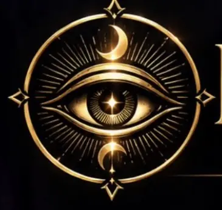

★★★★★
“Me gustó mucho la forma en que se presentó la lectura. Todo fue claro y la experiencia se sintió muy personal.”
ORÁCULO DIGITAL · BY MAVL

Lecturas de Tarot en línea.
Encuentra claridad, orientación y nuevas perspectivas.
Haz una pregunta; la primera es gratuita, revela tus cartas y descubre el mensaje simbólico del Tarot.
Solicita una lectura personalizada con ESOTERIC y elige entre atención por chat o llamada.
💬 Solicitar mi lectura personalizadaEste espacio está preparado para mostrar las opiniones reales de quienes han consultado en ESOTERIC.
“Me gustó mucho la forma en que se presentó la lectura. Todo fue claro y la experiencia se sintió muy personal.”
“La atención fue amable y la lectura estuvo muy bien explicada. Me ayudó a reflexionar sobre lo que estaba viviendo.”
“Una experiencia diferente y muy interesante. Me gustó poder consultar el Oráculo desde el celular y recibir mi lectura de forma sencilla.”